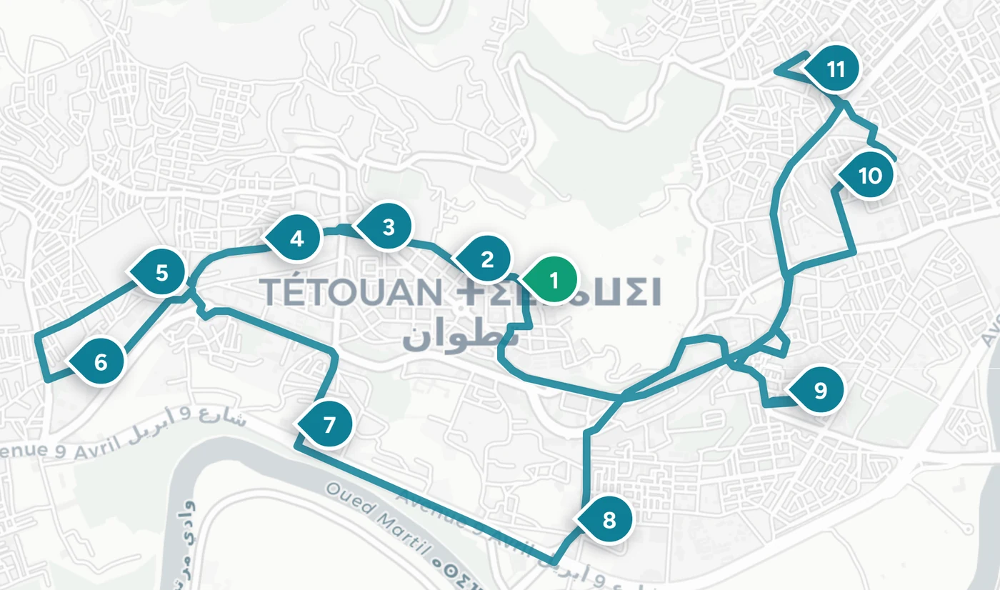

Chaque trajet scolaire, en direct.
Transco est le volet scolaire de la plateforme Transtra.
Aperçu de la console école (données de démonstration).
Aucun boîtier GPS. Un simple scan au départ.
Le téléphone du conducteur devient le GPS du bus. Tout le reste (la carte, les retards, les notifications) suit tout seul.
Le conducteur scanne le QR du bus
Chaque bus porte un code QR sécurisé. Au début du service, le conducteur le scanne dans son application : la course démarre et son téléphone diffuse la position du bus.
L’école voit toute sa flotte
Sur la console école, chaque bus en service apparaît sur la carte en direct : positions, retards, incidents et embarquements, en temps réel.
Les parents voient le bus arriver
Chaque parent suit le bus de son enfant jusqu’à l’arrêt de ramassage, avec l’heure d’arrivée estimée et la confirmation d’embarquement.
« Le bus de mon enfant », l’écran qui remplace l’attente au portail.
Arrivée vers 07:42
L’heure d’arrivée estimée, actualisée en continu tant que le bus roule. Plus besoin d’appeler l’école pour savoir où il est.
« Votre élève est monté dans le bus »
Le conducteur pointe chaque embarquement dans son application ; le parent en est informé aussitôt, à la montée comme à la descente.
Les retards, annoncés honnêtement
« Environ 5 min de retard » : l’application affiche l’état réel de la course et la fraîcheur des données, jamais une position périmée.
Signaler un problème
Un canal direct vers l’école : chaque signalement arrive dans la console, est pris en compte, puis résolu, avec traçabilité.
Votre élève est monté dans le bus
Toute votre flotte scolaire, sur un seul écran.
Bus, conducteurs, circuits, élèves et incidents : l’état opérationnel de votre transport, pensé pour être lisible sans formation.
Courses
Planifiez une course une fois ; la série se répète chaque jour ouvré et se modifie en une seule action. Chaque course garde son bus, son conducteur et son statut en direct.
Récurrente · Jours ouvrés (lun–ven)| Trajet | Véhicule | Conducteur | Statut | Retard |
|---|---|---|---|---|
| Circuit Agdal · Matin | BUS-01 | K. Benali | Active | À l’heure |
| Circuit Hay Riad · Matin | BUS-02 | S. Amrani | Active | +4 min |
| Circuit Centre · Soir | BUS-03 | Non assigné | Prévue | — |
Trajets et arrêts
Tracez chaque circuit en plaçant ses arrêts directement sur la carte : le premier est l’origine, le dernier la destination.

Cliquez sur la carte pour ajouter un arrêt © OpenStreetMap · © CARTOVéhicules et QR sécurisé
Un jeton sécurisé par bus, affiché une seule fois à la création. Régénérez-le à tout moment : l’ancien code cesse immédiatement de fonctionner.
Élèves
Élèves, leurs contacts parents et affectations de trajet. Chaque élève est rattaché à son circuit et à son arrêt ; sa présence, pointée par le conducteur, remonte à l’école comme aux parents.
Conçu pour des données d’enfants. Donc conçu strict.
Des rôles étanches
École, conducteurs et parents ne voient chacun que ce qui les concerne. Un parent ne suit que le bus de son propre enfant, jamais celui des autres.
QR à jeton unique
Le code QR de chaque bus porte un jeton secret, affiché une seule fois et révocable à tout moment. Impossible d’usurper un véhicule.
Des données honnêtes
L’état de la connexion et la fraîcheur de chaque position sont toujours affichés. Une donnée périmée n’est jamais présentée comme en direct.
Accessible et bilingue
Console et applications respectent le contraste WCAG AA, honorent la réduction des animations et existent en français comme en anglais.
Prêt à mettre vos bus en direct ?
Écrivez-nous : nous mettons votre école en ligne avec ses circuits, ses conducteurs et ses parents en quelques jours.
Demander une démoSur la route, chaque matin.
Chaque course est suivie de bout en bout, du premier arrêt jusqu’à l’école.